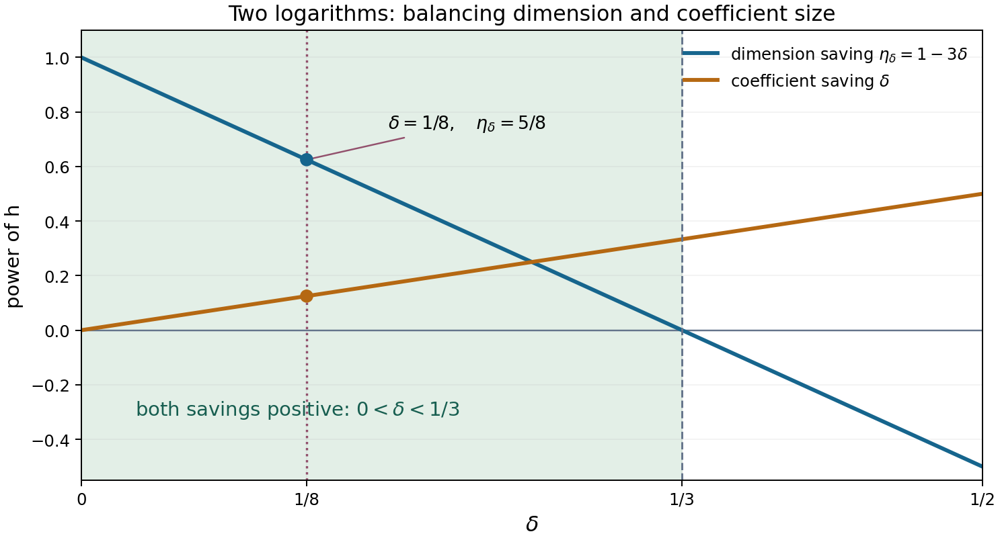

Baker's theorem I: building an auxiliary function
Draft. Public domain (CC0).
The proof will compare two measurements of the same value: complex analysis makes it small, while arithmetic gives a lower limit if it is nonzero. For that comparison to work, the values under consideration must be algebraic after a controlled normalization. Ordinary derivatives of exponential functions introduce logarithms, so choosing the right derivatives is the first construction problem.
We begin with a hypothetical relation between two logarithms and examine its diagonal jets. That calculation explains the separate variables in Baker's auxiliary function. We then pass to any number of logarithms, count the equations over a number field, and choose the polynomial degree so that both the dimension count and the coefficient size have room. The resulting function and its estimates are the inputs to Baker's theorem II: extrapolation and the end of the proof.
We use the integer-matrix form of Siegel's lemma proved in Siegel's lemma, analytic estimates and the six exponentials theorem, Lemma 5.1 and equation (5.2). The integral-basis theorem is proved in Discriminants and integral bases, Theorem 2.3; the norm's integrality and product of conjugates are proved in Algebraic integers and rings of integers, Section 3. Elementary complex differentiation supplies the analytic identities. The several-variable construction and the qualitative independence theorem are Baker's. The freely accessible [Waldschmidt 2003] lectures explain the normalized derivations and repeated extrapolation, including the algebraic constant term and arbitrary complex logarithms. [Waldschmidt 2000] supplies the height and box-principle arguments; [Sutherland 2021] supplies proofs of the lattice and norm facts used above. The explanations of normalized jets, integral coordinates and the parameter window below make the roles of the choices explicit.
1. The statement and the hypothetical relation
Theorem 2.1 (Baker). Let \(\alpha_1,\ldots,\alpha_n\) be nonzero algebraic numbers, and choose arbitrary logarithms \(\ell_j\) with \(e^{\ell_j}=\alpha_j\). If \(\ell_1,\ldots,\ell_n\) are linearly independent over \(\mathbb Q\), then
\[ 1,\ell_1,\ldots,\ell_n \]are linearly independent over \(\overline{\mathbb Q}\).
Theorem 2.1 is the theorem to be proved across this lesson and the next. It is not an input to the construction below. Suppose it fails. A relation has the form
\[ \beta_0+\beta_1\ell_1+\cdots+\beta_n\ell_n=0, \qquad \beta_j\in\overline{\mathbb Q}, \]with coefficients not all zero. Some coefficient of a logarithm is nonzero: otherwise \(\beta_0=0\) too. Relabel and divide to arrange \(\beta_n=-1\). Thus
\[ \ell_n=\beta_0+\sum_{r=1}^{n-1}\beta_r\ell_r. \tag{2.1} \]All \(\ell_j\) are nonzero because they are rationally independent. Fix the number field
\[ K=\mathbb Q(\alpha_1,\ldots,\alpha_n,\beta_0,\ldots,\beta_{n-1}), \qquad D=[K:\mathbb Q]. \]Constants in this lesson may depend on these fixed numbers and on the chosen logarithms. They do not depend on the large integer \(h\) introduced later.
The important feature of (2.1) is exponential, not just linear. For integers \(\lambda_j\), define
\[ \gamma_r=\lambda_r+\lambda_n\beta_r\quad(1\le r<n). \]Then
\[ e^{\lambda_n\beta_0 z}\prod_{r<n}e^{\gamma_r\ell_r z} =e^{(\lambda_1\ell_1+\cdots+\lambda_n\ell_n)z}. \]At integer \(z=l\), the right side is \(\prod_{j=1}^n\alpha_j^{\lambda_j l}\), an algebraic number. Away from the diagonal, the separate variables preserve control of derivatives. These are the two roles of the auxiliary function.
2. Why the diagonal needs normalized jets
For this calculation assume the hypothetical relation \(\ell_2=\beta_0+\beta_1\ell_1\), with algebraic \(\beta_0,\beta_1\), and let \(K\) contain the two bases and these coefficients. The assumption is part of a proof by contradiction; it is not an example claiming that independent logarithms actually satisfy such a relation.
The exponential polynomial one would first try is a sum of \(z^a e^{(b\ell_1+c\ell_2)z}\). At a positive integer \(l\), its terms are \(l^a\alpha_1^{bl}\alpha_2^{cl}\), which lie in \(K\). Its ordinary derivative contains \(b\ell_1+c\ell_2\), however; the values of that derivative are not already expressed by algebraic coefficients. We need a family of derivatives whose logarithmic factor can be taken outside the entire sum.
Separate the two roles of \(z\) by using \[ F_{a,b,c}(z_0,z_1)=z_0^a e^{c\beta_0z_0} e^{(b+c\beta_1)\ell_1z_1}. \] On the diagonal this is the desired term. Differentiation in \(z_0\) uses only the algebraic constant \(c\beta_0\), besides derivatives of the polynomial. Differentiation in \(z_1\) uses \((b+c\beta_1)\ell_1\), whose factor \(\ell_1\ne0\) is common to all summands. Thus \(\partial_{z_0}^{m_0}\partial_{z_1}^{m_1}/\ell_1^{m_1}\), evaluated at \((l,l)\), is algebraic on each summand and on their integer sum.
For example, with \(a=b=c=1\), put \(A_l=(\alpha_1\alpha_2)^l\). The three values are \[ \begin{aligned} F(l,l)&=lA_l,\\ \partial_{z_0}F(l,l)&=(1+\beta_0l)A_l,\\ \frac{\partial_{z_1}F(l,l)}{\ell_1}&=(1+\beta_1)lA_l. \end{aligned} \] Every right side lies in \(K\). By contrast, differentiating the diagonal restriction gives \([1+l(\ell_1+\ell_2)]A_l\). This distinction explains why the proof keeps the two partial derivatives until it applies complex analysis to a one-variable restriction.
With coefficient indices \((a,b,c)\), the full two-logarithm function is \[ \Phi(z_0,z_1)=\sum_{a,b,c=0}^L p_{a,b,c}z_0^a e^{c\beta_0z_0} e^{(b+c\beta_1)\ell_1z_1}. \] The normalized derivatives are sums over exactly these same coefficients; we can therefore impose their vanishing by linear equations over \(K\). The extra polynomial coordinate accommodates the constant term \(\beta_0\). Section 6 explains the smaller construction when that term is absent.
3. The function and its normalized derivatives
For the moment let \(L\ge1\) be an integer; Section 4 chooses it in terms of the zero budget.
We seek integers \(p_\lambda\), indexed by \(\lambda=(\lambda_0,\ldots,\lambda_n)\in\{0,\ldots,L\}^{n+1}\), and define
\[ \Phi(z_0,z_1,\ldots,z_{n-1}) =\sum_\lambda p_\lambda z_0^{\lambda_0} e^{\lambda_n\beta_0z_0} \prod_{r=1}^{n-1}e^{\gamma_r\ell_r z_r}. \tag{2.2} \]The function is entire in all \(n\) variables. For a multi-index \(m=(m_0,\ldots,m_{n-1})\), write \(|m|=\sum m_r\), \(\partial^m=\prod_r\partial_{z_r}^{m_r}\), and
\[ Q_{\lambda,m_0}(z) =\sum_{u=0}^{\min(m_0,\lambda_0)} \binom{m_0}{u}(\lambda_0)_u (\lambda_n\beta_0)^{m_0-u}z^{\lambda_0-u}, \tag{2.3} \]where \((a)_u=a(a-1)\cdots(a-u+1)\), with \((a)_0=1\). Differentiating (2.2) and using (2.1), at a positive integer \(l\) we obtain
\[ \partial^m\Phi(l,\ldots,l) =\left(\prod_{r=1}^{n-1}\ell_r^{m_r}\right) \sum_\lambda p_\lambda Q_{\lambda,m_0}(l) \prod_{j=1}^n\alpha_j^{\lambda_jl} \prod_{r=1}^{n-1}\gamma_r^{m_r}. \tag{2.4} \]Everything in the sum belongs to \(K\). The prefactor is fixed and nonzero for each \(m\), although it need not be algebraic. Vanishing of the derivative is therefore equivalent to vanishing of this normalized algebraic sum. This division is essential: one must not apply an algebraic norm directly to a derivative that contains logarithmic factors.
4. Dimension and coefficient budgets
Integral coordinates for the equations
We will impose homogeneous equations over \(K\), then express them as rational integer equations. Here is the elementary bookkeeping that makes this possible.
Choose a positive integer \(q\) so that all \(q\alpha_j\) and \(q\beta_r\) are algebraic integers. Choose an integral basis \(\omega_1,\ldots,\omega_D\) of \(\mathcal O_K\). Multiplication by each of these finitely many integral elements is an integer \(D\times D\) matrix in that basis. Give matrices the maximum row-sum norm. There is a fixed \(c\ge2\) such that every matrix has norm at most \(c\), and the coordinate vector of \(1\) has norm at most \(c\).
Consequently, a product of \(t\) members of this finite list has integer coordinates of absolute value at most \(c^{t+1}\). A sum of \(R\) such products, multiplied by rational integers of size at most \(T\), has coordinates bounded by \(RTc^{t+1}\), if every product has length at most \(t\). These bounds are crude but uniform. They replace repeated explicit reductions by minimal polynomials.
The needed form of Siegel's lemma is this: if an integer \(M\times N\) matrix has entries of absolute value at most \(U\ge1\), where \(0<M<N\), its kernel contains a nonzero integer vector \(p\) satisfying
\[ \|p\|_\infty\le(NU)^{M/(N-M)}. \]For the weaker conclusion we use, it is enough that \(N\ge2M\): then \(\|p\|_\infty\le NU\). It is proved in Siegel's lemma, analytic estimates and the six exponentials theorem, Lemma 5.1 and equation (5.2). This is exactly the integer-matrix statement, without a full-rank hypothesis. The box principle is also developed in [Waldschmidt 2000]; the internal lesson proves the integer-matrix statement and its number-field extension.
The matrix need not have rank \(M\). Extra or dependent equations cause no problem; the lemma only uses an upper bound for the number of rows.
Designing the degree instead of guessing it
The construction spends three different resources. Its integer grid has \(h\) points. Its derivative indices have total order at most \(h^2\), and are safely overcounted by \((h^2+1)^n\). Its \((n+1)\)-index coefficient box has \((L+1)^{n+1}\) entries. Each equation over the number field costs at most \(D\) rational equations. We need enough entries to outnumber those equations, but \(L\) must also be small enough that clearing denominators and differentiating do not use the entire coefficient allowance \(e^{h^3}\).
For the proof continued in the next lesson we choose \[ L=\left\lfloor h^{2-1/(4n)}\right\rfloor. \] The following construction retains that exact choice and every constant needed there. After its proof we identify the whole sufficient interval of powers of \(h\); this distinguishes the necessary budget requirements from one convenient parameter value.
Proposition 2.2 (auxiliary construction). For every sufficiently large integer \(h\), there are integers \(p_\lambda\), not all zero, with
\[ |p_\lambda|\le e^{h^3}, \qquad \partial^m\Phi(l,\ldots,l)=0 \quad(1\le l\le h,\ |m|\le h^2). \tag{2.5} \]Proof. For each \((l,m)\) in the stated range, set the algebraic sum in (2.4) equal to zero. There are at most \(h(h^2+1)^n\) such equations: this overcounts the multi-indices by allowing every component to range independently up to \(h^2\).
Multiply an equation by \(q^{nLh+h^2}\). Expand each factor \(\gamma_r^{m_r}=(\lambda_r+\lambda_n\beta_r)^{m_r}\) by the binomial theorem, and use (2.3). Each term contains at most \(nLh\) factors from the \(\alpha_j\) and at most \(h^2\) factors from the \(\beta_r\). Hence the chosen power of \(q\) clears every denominator; the unused powers of \(q\) are integers. The coefficients of the resulting linear equation are algebraic integers.
Express them in the integral basis. This produces an integer matrix with at most
\[ M=D h(h^2+1)^n \]rows and
\[ N=(L+1)^{n+1} \]columns. The arithmetic-coordinate bounds above give
\[ \log U\le C_1\bigl(Lh+h^2\log(L+1)+L\log(h+1)+h^2\bigr). \tag{2.6} \]For completeness, the factors in this estimate are as follows. Products of the integral generators, including the denominator-clearing factors, cost \(O(Lh+h^2)\) in their logarithmic coordinate size. Integer powers of the \(\lambda_j\), falling factorials and binomial coefficients cost \(O(h^2\log(L+1)+h^2)\). The powers of \(l\) in (2.3) cost at most \(L\log(h+1)\). The number of terms introduced by the binomial expansions is at most \(2^{|m|}(m_0+1)\), so its logarithm is \(O(h^2)\). All constants depend only on the fixed data.
There is room for a nonzero kernel vector because
\[ \frac NM\ge\frac{h^{\eta}}{D2^n}, \qquad \eta=1-\frac{n+1}{4n}=\frac{3n-1}{4n}>0. \]Indeed \(L+1>h^{2-1/(4n)}\) and \(h^2+1\le2h^2\). Thus \(N\ge2M\) once \(h\) is sufficiently large. Siegel's lemma supplies a nonzero integer vector with \(|p_\lambda|\le NU\).
Finally, (2.6) gives \(\log(NU)=o(h^3)\). The term \(Lh/h^3\) is at most \(h^{-1/(4n)}\); \(h^2\log(L+1)/h^3\) tends to zero; the other terms do too. Enlarge the threshold for \(h\) until \(\log(NU)\le h^3\). Then the coefficient bound and all equations in (2.5) hold. \(\square\)
This proposition finds a nonzero coefficient array. The final proof must still exploit rational independence to prevent the relevant exponential polynomial from vanishing identically. Counting alone does not provide that last step.
A sufficient window of parameter choices
Lemma (auxiliary parameter window). Fix \(n\) and the algebraic data. If \[ \begin{gathered} 0<\delta<\frac1{n+1},\\ L_\delta=\lfloor h^{2-\delta}\rfloor,\\ \eta_\delta=1-(n+1)\delta>0. \end{gathered} \tag{2.9} \] the auxiliary construction also works with \(L_\delta\): for every sufficiently large \(h\), there is a nonzero integer coefficient array of size at most \(e^{h^3}\) imposing all the zeros in (2.5).
Proof. The denominator exponent, derivative formulas and entry-size estimate (2.6) were proved for the displayed ranges of \(L,h,m,l\); their derivation did not use the particular fractional power of \(h\). With the new value of \(L\), the same counts give \[ \frac NM\ge\frac{h^{\eta_\delta}}{D2^n}\longrightarrow\infty. \] Thus \(N\ge2M\) for sufficiently large \(h\), with the explicit sufficient dimension cutoff \(h\ge(2^{n+1}D)^{1/\eta_\delta}\). On the other hand, the four terms in (2.6), divided by \(h^3\), are bounded by constant multiples of \[ \begin{gathered} h^{-\delta},\qquad \frac{\log h}{h},\\ h^{-1-\delta}\log(h+1),\qquad h^{-1}. \end{gathered} \] They all tend to zero. Also \(\log N=O(\log h)\). Consequently \(\log(NU)=o(h^3)\), so Siegel's lemma supplies the asserted coefficient bound after increasing the threshold. All imposed equations have the same normalized form, so they give the required diagonal zeros. \(\square\)
The lower endpoint \(\delta>0\) supplies the saving in denominator size; the upper endpoint supplies the excess of unknowns. These are sufficient uniform requirements, not a claim that every boundary choice is impossible for particular data. Our value \(\delta=1/(4n)\) lies strictly inside the interval for every \(n\ge1\). The next lesson uses that value, so no extrapolation parameter changes.

Figure. The sufficient parameter window (2.9) for \(n=2\). The blue exponent \(\eta_\delta=1-3\delta\) controls the excess of unknowns: \(N/M\ge h^{\eta_\delta}/(4D)\). The orange exponent \(\delta\) controls the leading denominator contribution, whose ratio to \(h^3\) is \(O(h^{-\delta})\). Both savings are positive for \(0<\delta<1/3\). At the choice used in the proof, \(\delta=1/8\), they are \(1/8\) and \(5/8\). The endpoints are excluded from this sufficient window; the figure asserts no impossibility theorem at them. Original figure by GPT-6.1 Sol (OpenAI), Codex, Ultra; CC0. Reproducible figure source.
For \(n=2,h=1000\), the chosen power \(h^{15/8}\) lies between \(421696\) and \(421697\), so \(L=421696\). There are \(421697^3\) unknowns and at most \(D\cdot1000\cdot1000001^2\) rational equations; their ratio is about \(74.99/D\). This is a dimension example, not a uniform assertion that \(h=1000\) meets the coefficient threshold for every field and every algebraic relation.
5. Growth and arithmetic separation at integers
For \(|m|\le h^2\), define the one-variable entire function
\[ f_m(z)=\partial^m\Phi(z,\ldots,z). \]Proposition 2.3. There are constants \(C_2,C_3>0\), independent of \(h,m,z,l\), such that, for every sufficiently large \(h\),
\[ |f_m(z)|\le\exp\bigl(C_2(h^3+L|z|)\bigr)\quad(z\in\mathbb C), \tag{2.7} \]and, for every positive integer \(l\), either \(f_m(l)=0\) or
\[ |f_m(l)|\ge\exp\bigl(-C_3(h^3+Ll)\bigr). \tag{2.8} \]Proof of the growth estimate. The differentiated expression (2.4) remains valid for complex \(z\) if its algebraic product is interpreted as \(e^{z\sum_j\lambda_j\ell_j}\). Its exponential factor has size at most \(e^{C L|z|}\). The powers of \(z\) are bounded by \(\max(1,|z|)^L\le e^{L|z|}\). Formula (2.3), the factors \(\gamma_r^{m_r}\), and the logarithmic prefactor have total size at most \(e^{C h^2\log(L+1)}\). There are \((L+1)^{n+1}\) summands and \(|p_\lambda|\le e^{h^3}\). Since \(h^2\log(L+1)=o(h^3)\), these bounds imply (2.7).
Proof of the arithmetic estimate. Put \(P_m=\prod_{r<n}\ell_r^{m_r}\ne0\). At a positive integer \(l\),
\[ A=q^{nLl+h^2}\frac{f_m(l)}{P_m} \]is an algebraic integer in \(K\), by exactly the denominator argument used in Proposition 2.2. At every embedding \(\sigma:K\hookrightarrow\mathbb C\), expand (2.4) after replacing the algebraic data by their conjugates. There are finitely many fixed conjugates, so the same estimates give
\[ |\sigma(A)|\le\exp\bigl(C_4(h^3+Ll)\bigr). \]Here \(L\log(l+1)\le L(l+1)\), and \(L\le h^2\), so the polynomial factors are absorbed. If \(f_m(l)\ne0\), then \(A\ne0\), and its rational integer norm has absolute value at least \(1\). Bound the other \(D-1\) conjugates from above to obtain
\[ |A|\ge\exp\bigl(-(D-1)C_4(h^3+Ll)\bigr). \]Moreover \(\log|P_m|=\sum_{r<n}m_r\log|\ell_r|\ge-C_5h^2\), since the logarithms are fixed and nonzero. Multiplying by \(|P_m|q^{-nLl-h^2}\) gives (2.8). \(\square\)
The estimates have complementary directions. Complex analysis will make \(f_m(l)\) extremely small at new integers. Arithmetic says a nonzero value there has a definite minimum size. If the analytic estimate beats that minimum, the new value is exactly zero.
6. What changes when the constant term vanishes
If \(\beta_0=0\), no polynomial variable is needed. For \(n\ge2\), define instead
\[ \Psi(z_1,\ldots,z_{n-1}) =\sum_{\lambda_1,\ldots,\lambda_n=0}^{L_0} p_\lambda\prod_{r<n}e^{(\lambda_r+\lambda_n\beta_r)\ell_rz_r}, \qquad L_0=\left\lfloor h^{2-1/(4n)}\right\rfloor. \]The same diagonal algebraicity holds. There are \((L_0+1)^n\) unknowns and at most \(D h(h^2+1)^{n-1}\) equations. The ratio grows at least as a fixed positive multiple of \(h^{3/4}\). The coefficient bound and growth/norm arguments therefore work with the same \(e^{h^3}\) scale. This smaller construction explains why the inhomogeneous theorem requires extra work.
7. Exercises
Exercise 1 (easy). Assuming Theorem 2.1, prove the Gelfond–Schneider theorem: if \(\alpha\ne0,1\) is algebraic and \(\beta\) is algebraic irrational, every value of \(\alpha^\beta\) is transcendental.
Exercise 2 (medium). Prove the coordinate bound in Section 4 by multiplying integer matrices. Explain why it is valid even when the algebraic generators are not a basis of the field.
Exercise 3 (medium). Verify the derivative formula (2.4) for \(n=2\) and \(m=(2,1)\). Track every factor containing a logarithm.
Exercise 4 (medium). Prove that \(N/M\to\infty\) with the parameter \(L\) used in Proposition 2.2. Give an explicit sufficient inequality on \(h\) for \(N\ge2M\), in terms of \(D,n\). Explain why this does not yet supply an explicit threshold for the coefficient bound.
Exercise 5 (hard). Prove the auxiliary construction and both estimates for the function \(\Psi\) in the constant-free case. Give the denominator-clearing exponent and all equation and unknown counts.
Exercise 6 (medium). Suppose \(\alpha\) has degree \(d\) and satisfies
\[ A_0\alpha^d+A_1\alpha^{d-1}+\cdots+A_d=0, \qquad A_j\in\mathbb Z,\quad A_0\ne0,\quad |A_j|\le A,\quad A\ge1. \]Prove that, for every \(j\ge0\), the power \((A_0\alpha)^j\) is a linear combination of \(1,\alpha,\ldots,\alpha^{d-1}\) with integer coefficients of absolute value at most \((2A)^j\). This gives an explicit one-generator counterpart of the matrix estimate in Section 2.
8. Solutions
Solution 1. Choose a logarithm \(\ell\) of \(\alpha\); it is nonzero because \(\alpha\ne1\). If \(\gamma=e^{\beta\ell}\) were algebraic, then \(\beta\ell\) would be a logarithm of \(\gamma\). The pair \(\ell,\beta\ell\) is rationally independent, since a nontrivial rational relation would make \(\beta\) rational. Theorem 2.1 forbids the algebraic relation \(\beta\ell-(\beta\ell)=0\), viewed as coefficients \(\beta,-1\) on those two logarithms. Every branch is handled by its chosen \(\ell\).
Solution 2. If \(v\) is an integral coordinate vector, multiplication by a fixed algebraic integer is \(v\mapsto Mv\) for an integer matrix \(M\). The row-sum norm gives \(\|Mv\|_\infty\le c\|v\|_\infty\). Starting from the coordinates of \(1\), induction bounds a product of \(t\) factors by \(c^{t+1}\). The triangle inequality gives the sum bound. The generators are used as multiplication operators on an integral basis of \(\mathcal O_K\); they themselves need not be linearly independent.
Solution 3. Write the coefficient indices as \((a,b,c)\). Differentiation in \(z_0\) twice contributes
\[ Q_{a,c,2}(z)=a(a-1)z^{a-2} +2ac\beta_0z^{a-1}+c^2\beta_0^2z^a, \]with terms containing negative powers omitted when their falling factorial vanishes. Differentiation in \(z_1\) once contributes \((b+c\beta_1)\ell_1\). On the diagonal, the exponential is \(e^{(b\ell_1+c\ell_2)z}\); at \(l\) this is \(\alpha_1^{bl}\alpha_2^{cl}\). Thus \(\partial_{z_0}^2\partial_{z_1}\Phi(l,l)\) equals \(\ell_1\) times the sum of the algebraic terms \(p_{a,b,c}Q_{a,c,2}(l)(b+c\beta_1)\alpha_1^{bl}\alpha_2^{cl}\). The only remaining logarithmic factor is the common prefactor \(\ell_1\).
Solution 4. Section 4 gives \(N/M\ge h^{(3n-1)/(4n)}/(D2^n)\). Therefore
\[ h\ge(2^{n+1}D)^{4n/(3n-1)} \]is sufficient for \(N\ge2M\). The entry bound \(U\) still involves constants depending on the actual algebraic data, not only \(D,n\). A coefficient threshold must also ensure \(\log(NU)\le h^3\); the dimension inequality alone does not do that.
Solution 5. Divide the derivative \(\partial^m\Psi(l,\ldots,l)\) by \(\prod_{r<n}\ell_r^{m_r}\). The result is
\[ \sum_\lambda p_\lambda\prod_{j=1}^n\alpha_j^{\lambda_jl} \prod_{r<n}(\lambda_r+\lambda_n\beta_r)^{m_r}. \]For \(l\le h\), \(|m|\le h^2\), multiplication by \(q^{nL_0h+h^2}\) clears denominators. There are at most \(D h(h^2+1)^{n-1}\) integer equations and \((L_0+1)^n\) unknowns. Their ratio is at least \(h^{3/4}/(D2^{n-1})\). The entries obey \(\log U\le C(L_0h+h^2\log(L_0+1)+h^2)\), whose ratio to \(h^3\) tends to zero. Siegel's lemma therefore gives nonzero integer coefficients of size at most \(e^{h^3}\). For complex \(z\), each differentiated summand has exponential growth \(e^{CL_0|z|}\) and derivative factors \(e^{Ch^2\log(L_0+1)}\), proving the growth estimate. At an arbitrary positive integer \(l\), use \(q^{nL_0l+h^2}\) instead; its product with the normalized value is an algebraic integer. Bounding all conjugates and using its nonzero integer norm gives the arithmetic lower bound. Restore the logarithmic prefactor, whose size is at least \(e^{-Ch^2}\). Both estimates have the shapes (2.7)–(2.8).
Solution 6. Start at \(j=0\) with coefficient vector \((1,0,\ldots,0)\). If \((A_0\alpha)^j=\sum_{k=0}^{d-1}c_k\alpha^k\), multiplication by \(A_0\alpha\), followed by one use of the displayed polynomial relation, gives new coefficients
\[ c'_0=-A_dc_{d-1},\qquad c'_k=A_0c_{k-1}-A_{d-k}c_{d-1}\quad(1\le k<d). \]They are integers, and each has absolute value at most \(2A\max_k|c_k|\). Induction proves the bound. For \(d=1\), only the first formula is present and it gives the stronger factor \(A\).
Prerequisites and continuation
The integral-basis and norm facts are proved in the lessons cited in the introduction. The stated integer-matrix form of Siegel's lemma is proved in the written fifth lesson of Transcendental numbers. Proposition 2.2, both estimates in Proposition 2.3, the arithmetic-coordinate calculation and all exercise solutions are proved here. Theorem 2.1 is completed by extrapolation and coefficient recovery in Baker's theorem II: extrapolation and the end of the proof; the Gelfond–Schneider deduction uses that completed theorem.
References
- [Waldschmidt 2003] Michel Waldschmidt, “Linear Independence Measures for Logarithms of Algebraic Numbers,” in Diophantine Approximation, Lecture Notes in Mathematics 1819, Springer, 2003, 249–344. Author's full text. Explains the normalized derivations, auxiliary construction and extrapolation, including nonhomogeneous forms.
- [Waldschmidt 2000] Michel Waldschmidt, Diophantine Approximation on Linear Algebraic Groups, Springer, 2000. Author's full text. Develops the height, Liouville and box-principle arguments.
- [Sutherland 2021] Andrew V. Sutherland, Number Theory I, MIT OpenCourseWare, Fall 2021. Norm and trace and integral lattices. These notes are credited to Sutherland and MIT; their own licence applies.
- [Waldschmidt 1992] Michel Waldschmidt, Linear Independence of Logarithms of Algebraic Numbers, IMSc Report 116, 1992, revised text dated 2016. Author's full text. A complementary treatment using interpolation determinants.